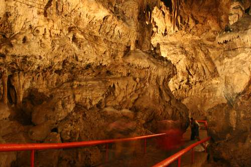

. Entrar en las Grutas de Rancho Nuevo, municipio de San Cristóbal de Las Casas, es trasladarse a una historia de imaginación, mitos y figuras extrañas e increíbles formadas a lo largo de los siglos en las paredes húmedas y frías por las estalactitas y estalagmitas.
Las Grutas de Rancho Nuevo se localizan a 10 kilómetros de San Cristóbal, sobre la carretera a Comitán. En 1947 Vicente Kramski, quien murió en 2010, y su primo Edmundo Schlié, también ya finado, comenzaron a explorar la caverna, cuyo recorrido es desde hace varias décadas un atractivo para propios y extraños. Se encuentran en medio del Parque Ecoturístico Rancho Nuevo, que tiene cerca de 20 hectáreas de cerrado bosque de pinos, propiedad de la Secretaría de la Defensa Nacional (Sedena), aunque desde hace unos tres años son administradas por la Sociedad Cooperativa de Prestadores de Servicio Turístico, integrada por 73 indígenas de las comunidades de Teopisca y San Cristóbal, entre artesanos y las personas que ofrecen el paseo en caballos. Tienen 11 trabajadores de base y en temporada alta contratan a otros 10.
Marcelino López Díaz, presidente de la cooperativa, dice que uno de los atractivos más interesantes del parque son las grutas, exploradas sólo en seis por ciento. Los visitantes también pueden encontrar tiendas de artesanías, antojitos (quesadillas, jugos de naranja, elotes, etcétera), venados en exhibición, resbaladillas hasta de 60 metros de longitud (muy concurridas), un pequeño museo fotográfico con la historia de las grutas, asadores, palapas, estacionamiento y caballos para pasear por el bosque.